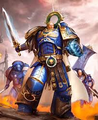

Roboute Guilliman
O Primarca da XIII Legião, os Ultramarines, é o arquiteto, o estadista e o mestre da logística. Roboute Guilliman, conhecido como o "Filho Vingativo", não é apenas um guerreiro, mas o maior administrador que a humanidade já conheceu. Ele é o homem que mantém o Império funcionando através da razão e da ordem.
Quem é Guilliman?
Guilliman caiu no mundo civilizado de Macragge. Ele foi adotado por Konor Guilliman, um dos dois Cônsules que governavam o planeta. Diferente de muitos de seus irmãos, Roboute teve uma educação nobre, estável e focada na governança, filosofia e estratégia militar clássica. Após a morte de seu pai adotivo em uma rebelião, Roboute assumiu o controle, esmagou os traidores e transformou Macragge em um mundo utópico. Quando o Imperador o encontrou, Guilliman já havia construído seu próprio império em miniatura: os Cinco Mil Mundos de Ultramar.
Características e Personalidade:
O Mestre da Logística: Ele acredita que as guerras são ganhas antes do primeiro tiro, através de cadeias de suprimentos perfeitas e organização. Ele é capaz de processar milhares de dados simultaneamente.
Mente Teórica e Prática: Ele opera sob o conceito de "Theoretical/Practical". Primeiro, ele analisa todas as possibilidades teóricas; depois, aplica a solução prática mais eficiente.
Fome de Ordem: Guilliman odeia o caos (tanto o conceito quanto a facção). Ele vê o Império atual como um pesadelo de fanatismo religioso e burocracia inútil, o que lhe causa uma profunda tristeza.
Grandes Feitos
A Construção de Ultramar: Enquanto outros Primarcas deixavam mundos em ruínas após a conquista, Guilliman deixava hospitais, escolas, sistemas de impostos justos e defesas sólidas. Ultramar tornou-se a região mais próspera e segura da galáxia.
O Império Secundus: Durante a Heresia de Horus, quando o sinal do Astronomican se apagou e a Terra parecia perdida, Guilliman fundou o "Imperium Secundus" para garantir que a humanidade sobrevivesse caso o Imperador caísse. Embora tenha feito isso por dever, ele carregou a culpa desse ato por milênios, temendo que fosse visto como traição.
A Batalha de Calth: Guilliman sobreviveu a uma traição devastadora dos Word Bearers em Calth. Durante a batalha, ele lutou no vácuo do espaço sem capacete, por puro ódio e determinação, provando que sua fúria, quando despertada, é tão terrível quanto a de qualquer um de seus irmãos.
O Codificador: Após a morte de Horus, Guilliman foi o principal responsável por reestruturar o Império. Ele dividiu as Legiões em Capítulos menores para garantir que nenhum homem sozinho jamais tivesse o poder de trair o Império com metade das forças militares da galáxia novamente.
Atualmente: Após passar 10.000 anos em estase devido a um ferimento mortal causado por Fulgrim, Guilliman foi ressuscitado no final do 41º Milênio com a ajuda da tecnologia de Belisarius Cawl e da magia Eldar. Agora ele governa como regente do imperador, com apoio de seu irmão Lion El'Jonson
Estilo de Combate
- Espada do Imperador
- Combate estratégico e coordenado